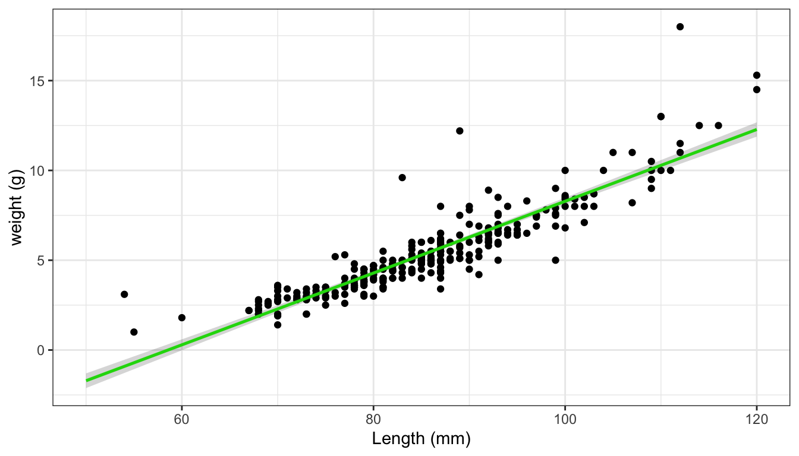

Question- How does fish length predict fish weight for trout perch (across all sample years)
#filtering data, importing csvfish_df <-read_csv(here("data", "ntl6_v12.csv")) %>%#filtering rows that have "TROUTPERCHfilter(spname =="TROUTPERCH") %>%#selecting specific rowsselect(spname,year4,length,weight) %>%#renaming columnns rename(year = year4)
Rows: 349229 Columns: 15
── Column specification ────────────────────────────────────────────────────────
Delimiter: ","
chr (8): lakeid, gearid, spname, sampletype, indid, fishpart, spseq, flag
dbl (5): year4, depth, rep, length, weight
lgl (1): sex
date (1): sampledate
ℹ Use `spec()` to retrieve the full column specification for this data.
ℹ Specify the column types or set `show_col_types = FALSE` to quiet this message.
1.Hypothesis
Linear models describes linear relationship between variable and predictor
Null Hypothesis: There is no significant relationship between trout-perch length (mm) and trout-perch weight (g), indicating that trout-perch length does not indicate trout-perch weight. There is no significant relationship between trout-perch length (mm) and trout perch weight (g), due to the slope of the regression line result to zero or the p-value was greater than 0.05.
Alternative Hypothesis: There is significant relationship between trout-perch length (mm) and trout-perch weight (g), indicating that trout-perch length can predict trout-perch weight. There is significant relationship between trout-perch length (mm) and trout-perch weight (g), due to the slope of the regression line resulting to not equal zero and having a p-value lower than 0.05.
# 200 missing rows for weight# have all rows for length gg_miss_var(fish_df)
When running the function gg_miss_var, a total of 199 missing observation was discovered in the column of weight. This resulted in having the original data frame be 489 to the new data frame being 290. These missing observation help assign weight be the depending variable and length being the independent variable.
#using tidyverse to filter out any Na values in the weight columntroutperch_Na <- fish_df %>%drop_na(weight)View(troutperch_Na)
#quick visual of the data ggplot(data = troutperch_Na, aes(x = length, y = weight)) +geom_point()+labs(title ="Trout-perch lengths and weight")+theme_classic()
Diagnostic Plot
#diagnostic plotmodelobject <-lm(weight ~ length, data = troutperch_Na)#combining all four groups in a 2 x 2par(mfrow =c(2,2))plot(modelobject)
The diagnostic plot “Residual vs Fitted” visually implies that the data is heteroscedasticity. The observations are clumped in the middle and are not scattered.
The diagnostic plot “Normal Q-Q” visually implies that data is normal but the right tail is very close to not being normal.
The diagnostic plot “Scale-Location visually implies if the data is heteroscedasiticty or homoscedasticity. Again, majority of the data resides in the middle, concluding that the data is of heteroscedasiticity.
The diagnostic plot “Residual vs Leverage” visually implies if there any outlier within the data. There appears to be one data point that is outside of the dashed line and thus, a outlier.
Summary
#using function summary() to display results model_summary <-summary(modelobject)model_summary
Call:
lm(formula = weight ~ length, data = troutperch_Na)
Residuals:
Min 1Q Median 3Q Max
-3.0828 -0.4862 -0.1830 0.4128 7.3191
Coefficients:
Estimate Std. Error t value Pr(>|t|)
(Intercept) -11.702476 0.481564 -24.30 <2e-16 ***
length 0.199852 0.005584 35.79 <2e-16 ***
---
Signif. codes: 0 '***' 0.001 '**' 0.01 '*' 0.05 '.' 0.1 ' ' 1
Residual standard error: 1.057 on 288 degrees of freedom
Multiple R-squared: 0.8164, Adjusted R-squared: 0.8158
F-statistic: 1281 on 1 and 288 DF, p-value: < 2.2e-16
The function summary
ANOVA
#anova is used to get analysis of variance tables for a model model_sqaures <-anova(modelobject)
#creating a table that demonstrates ANOVAmodel_squares_table <-tidy(model_sqaures) %>%# round the sum of squares and mean squares columns to have 5 digits (could be less)mutate(across(sumsq:meansq, ~round(.x, digits =5))) %>%# round the F-statistic to have 1 digitmutate(statistic =round(statistic, digits =1)) %>%# replace the very very very small p value with < 0.001mutate(p.value =case_when(p.value <0.001~"<0.001")) %>%#creating a table flextable() %>%#changing the header, for ease of understanding set_header_labels(df ="Degrees of Freedom", sumsq ="Sum of squares",meansq ="Mean squares",statistic ="F-statistic",p.value ="p-value" )model_squares_table
term
Degrees of Freedom
Sum of squares
Mean squares
F-statistic
p-value
length
1
1,432.2877
1,432.28769
1,280.8
<0.001
Residuals
288
322.0525
1.11824
8.In 1-2 sentences, describe how the ANOVA table relates to the information you get from the summary() object.
The ANOVA tables relates to the summary() object, in terms of finding if the slope is equal to zero or not equal to zero. By incorporating sum of squares and mean squares, the F-value if the value is large means that the variation among group means is more than expected by chance, and can conclude that the slope is not equal to zero.
9.In 2-3 sentences, summarize your results in prose with in-text references to test results. Include all relevant information.
When running the summary(), the t-value for length was 35.79, the length’s slope was 0.19985, p-value was <2e-16 and the standard error was 0.005585. When running the ANOVA the F-test was 1,280.8 and p-value was less than 0.001. The results from both tests, concluded that the length slope is postive, has a p-value lower than 0.05, thus we can reject the null hypothesis and accept the alternative hypothesis and can conclude that fish length can predict fish weight for trout perch.
plot_predictions <-ggplot(data = troutperch_Na, aes(x = length, y = weight)) +#type of graph geom_point() +# plotting the predictions on data geom_line(data = predictions, aes(x = x, y = predicted), color ="brown", linewidth = .9) +# then plot the 95% confidence interval from ggpredictgeom_ribbon(data = predictions, aes(x = x, y = predicted, ymin = conf.low, ymax = conf.high), alpha = .2) +## theme and labels ##theme_economist()+#from ggthemes # labeling plot labs(x ="Length (mm)",y ="Weight (g)",title ="Prediction of Trout-Perch" )+#adjusting functions theme(plot.title =element_text(face ="bold"),axis.ticks =element_line(linewidth =3, color ="darkgray") )plot_predictions

The plot above demonstrates data of trout perch weight and length, between the years of 1981 - 2022 in the North Temperate Lakes. When comparing the trout perch length and weight and by running ANOVA and the summery(), the length has a postive slope. The predication interval is visualized by the brown line which defines a range of values within which a response is likely to fall given a specified length value. The gray hue, surrounding the predication interval represents the a confidence level of 95% the predication interval can predict in. In conclusion, the data can help predict the weight of a troutperch when given the length of the troutperch.
The above plot demonstrates data regarding the weight and length of trout perch in the North Temperate Lakes from 1981 to 2022. By conducing ANOVA and using the “summary()” function, we had significant evidence to reject the null hypothesis and accept the alternative hypothesis. This is viewed being that the slope of this plot does not equal to zero but the length of the trout perch exhibits a positive slop.
The brown line in the plot represents the prediction interval, which establishes a range of values where the response is likely to fall, given a specific length value. The gray shading surrounding the prediction interval signifies a confidence level of 95%, indicating the accuracy of the prediction interval. In conclusion, this data can be utilized to predict the weight of a trout perch based on its length in the North Temperate Lakes.